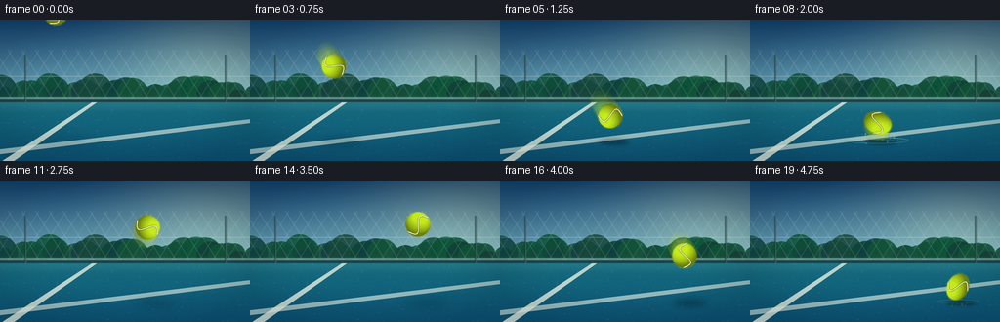
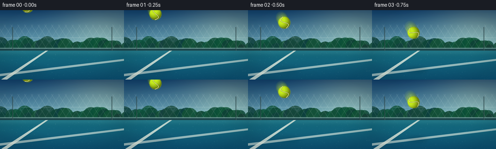
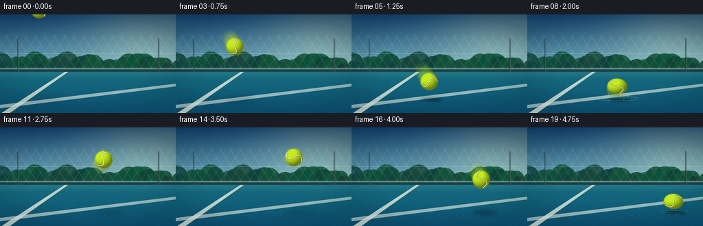
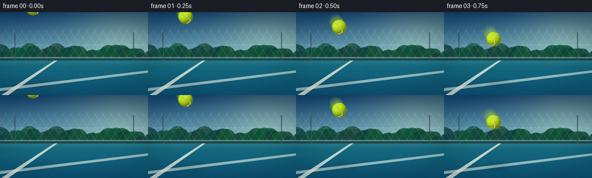

CODING AGENTS AS PIXEL WORLD MODELS
traex/GPT-5.6-Sol · phygen_028
点击播放 · 原生 RGB 像素
逐轮保存的候选
回放视频、检查图与代码变化。
每份候选均可单独播放。实际图片检查记录在下方工具轨迹中。
候选 01播放与检查图
点击播放 · 原生 RGB 像素


展开代码变化
--- 上一保存版本
+++ 本次保存版本
@@ -0,0 +1,255 @@
+from pathlib import Path
+import json, math
+import numpy as np
+from PIL import Image, ImageDraw, ImageFilter
+import artifact_io
+
+ROOT = Path(__file__).resolve().parent
+SPEC = json.loads((ROOT/'task_spec.json').read_text())
+W, H, N = SPEC['width'], SPEC['height'], SPEC['frames']
+S = 4
+SW, SH = W*S, H*S
+rng = np.random.default_rng(2801)
+
+# ---------- Static cinematic outdoor hard-court background ----------
+def make_background():
+ yy, xx = np.mgrid[0:SH, 0:SW]
+ y = yy / S
+ x = xx / S
+ arr = np.zeros((SH, SW, 3), dtype=np.float32)
+ # Deep, bright late-afternoon sky
+ t = np.clip(y/88, 0, 1)
+ top = np.array([22, 66, 104.], dtype=np.float32)
+ bottom = np.array([122, 181, 190.], dtype=np.float32)
+ arr[:] = top[None,None,:]*(1-t[...,None]) + bottom[None,None,:]*t[...,None]
+ # warm glow from upper right
+ glow = np.exp(-((x-222)**2/(2*70**2)+(y-36)**2/(2*45**2)))[...,None]
+ arr += glow*np.array([48,38,15])[None,None,:]
+
+ im = Image.fromarray(np.uint8(np.clip(arr,0,255)), 'RGB')
+ d = ImageDraw.Draw(im, 'RGBA')
+ # distant soft treeline and hedge
+ tree_rng = np.random.default_rng(112)
+ for i in range(34):
+ cx = int((i*9-16 + tree_rng.normal(0,4))*S)
+ cy = int((76 + tree_rng.normal(0,3))*S)
+ rr = int(tree_rng.uniform(8,18)*S)
+ col = (16+int(tree_rng.uniform(0,12)), 66+int(tree_rng.uniform(0,25)), 55+int(tree_rng.uniform(0,12)), 220)
+ d.ellipse((cx-rr,cy-rr,cx+rr,cy+rr), fill=col)
+ # low wall beyond court
+ d.rectangle((0,78*S,SW,91*S), fill=(23,62,67,255))
+ d.rectangle((0,78*S,SW,80*S), fill=(140,191,174,150))
+ # chain-link fence silhouette, delicate and out-of-focus
+ for x0 in range(-20, 280, 14):
+ d.line((x0*S,30*S,(x0+32)*S,80*S), fill=(208,230,218,35), width=S//2+1)
+ d.line(((x0+32)*S,30*S,x0*S,80*S), fill=(208,230,218,27), width=S//2+1)
+ d.line((0,57*S,SW,57*S), fill=(210,229,218,58), width=S)
+ # fence posts
+ for x0 in (25, 230):
+ d.rectangle((x0*S,35*S,(x0+2)*S,84*S), fill=(31,58,61,150))
+ d.rectangle(((x0+1)*S,35*S,(x0+2)*S,84*S), fill=(190,210,198,45))
+
+ # court plane gradient
+ court_top = 84*S
+ cyy = np.arange(SH-court_top)[:,None] / max(1,(SH-court_top-1))
+ ctop = np.array([27,112,127.])
+ cbot = np.array([18,82,111.])
+ court = ctop[None,None,:]*(1-cyy[...,None])+cbot[None,None,:]*cyy[...,None]
+ court = np.repeat(court, SW, axis=1)
+ # subtle granular hard-court texture
+ noise = rng.normal(0, 2.4, court.shape[:2])[...,None]
+ court += noise*np.array([.55,.78,1.0])[None,None,:]
+ a = np.array(im)
+ a[court_top:] = np.uint8(np.clip(court,0,255))
+ im = Image.fromarray(a, 'RGB')
+ d = ImageDraw.Draw(im, 'RGBA')
+ # court boundary lines in perspective; keep impact zone unobstructed
+ poly = [(2*S,SH),(14*S,SH),(99*S,84*S),(94*S,84*S)]
+ d.polygon(poly, fill=(229,238,218,200))
+ d.polygon([(0,132*S),(0,137*S),(256*S,105*S),(256*S,101*S)], fill=(225,237,219,155))
+ # fine scattered court flecks
+ speck_rng=np.random.default_rng(556)
+ for _ in range(280):
+ sx=int(speck_rng.uniform(0,SW)); sy=int(speck_rng.uniform(85*S,SH)); r=speck_rng.choice([1,1,1,2])
+ d.ellipse((sx-r,sy-r,sx+r,sy+r), fill=(185,211,198,int(speck_rng.uniform(12,35))))
+ # horizon bloom / depth haze
+ haze=Image.new('RGBA',(SW,SH),(0,0,0,0)); hd=ImageDraw.Draw(haze)
+ hd.rectangle((0,77*S,SW,93*S), fill=(169,212,196,25))
+ haze=haze.filter(ImageFilter.GaussianBlur(5*S))
+ im=Image.alpha_composite(im.convert('RGBA'),haze)
+ # vignette
+ yy,xx=np.mgrid[0:SH,0:SW]
+ nx=(xx-SW/2)/(SW/2); ny=(yy-SH/2)/(SH/2)
+ vig=np.clip((nx*nx+ny*ny-.38)*32,0,30).astype(np.uint8)
+ va=np.zeros((SH,SW,4),dtype=np.uint8); va[...,3]=vig; va[...,:3]=np.array([4,18,26],np.uint8)
+ im=Image.alpha_composite(im,Image.fromarray(va,'RGBA'))
+ return im
+
+BG=make_background()
+GROUND_Y=123.0
+
+# Center positions, designed as forceful descent -> maximum compression -> lively rebound -> second contact.
+centers=[
+ (57,-7),(65,8),(75,26),(86,47),(99,72),(113,98),
+ (125,114.5),(128,117.0),(131,105),(137,82),(144,62),(151,47),
+ (158,39),(165,38),(172,44),(180,57),(189,76),(199,99),
+ (208,115.5),(213,108)
+]
+# scale radii; the two contact frames are visibly elastic.
+radii=[(12.5,12.5)]*6+[(17.5,8.0),(21.5,5.7),(14.5,11.2)]+[(12.8,12.8)]*9+[(17.0,7.7),(14.2,11.0)]
+# rotation follows fast spin
+angles=[-32+i*24 for i in range(N)]
+angles[6]=95; angles[7]=112; angles[18]=22
+
+
+def make_ball(rx, ry, angle, seed=0):
+ # generous transparent margin for fuzzy nap
+ pad=7*S
+ w=int(2*(rx*S+pad)); h=int(2*(ry*S+pad))
+ yy,xx=np.mgrid[0:h,0:w]
+ cx=(w-1)/2; cy=(h-1)/2
+ nx=(xx-cx)/(rx*S); ny=(yy-cy)/(ry*S)
+ rr=nx*nx+ny*ny
+ inside=rr<=1
+ z=np.sqrt(np.clip(1-rr,0,1))
+ # directional light from upper-left, rich chartreuse felt
+ light=np.clip(-.47*nx-.62*ny+.88*z,0,1)
+ rim=np.clip((z-.02)/.25,0,1)
+ local_rng=np.random.default_rng(700+seed)
+ n=local_rng.normal(0,1,(h,w))
+ n=(n+np.roll(n,2,0)+np.roll(n,2,1))/3
+ base=np.zeros((h,w,4),dtype=np.uint8)
+ shade=.48+.48*light
+ base[...,0]=np.uint8(np.clip((174*shade+24)+n*4,0,255))
+ base[...,1]=np.uint8(np.clip((214*shade+25)+n*5,0,255))
+ base[...,2]=np.uint8(np.clip((31*shade+5)+n*2,0,255))
+ alpha=np.where(inside, np.uint8(np.clip(rim*255,0,255)),0)
+ # fuzzy edge outside geometric sphere
+ dist=np.sqrt(rr)
+ fuzz=np.uint8(np.clip((1.065-dist)/.065*125,0,125))
+ alpha=np.maximum(alpha,fuzz)
+ base[...,3]=alpha
+ ball=Image.fromarray(base,'RGBA')
+ # felt fibers at silhouette
+ bd=ImageDraw.Draw(ball,'RGBA')
+ frng=np.random.default_rng(9000+seed)
+ for k in range(125):
+ th=frng.uniform(0,2*math.pi)
+ ex=cx+math.cos(th)*rx*S; ey=cy+math.sin(th)*ry*S
+ ln=frng.uniform(.25,1.3)*S
+ col=(213,239,68,int(frng.uniform(25,105)))
+ bd.line((ex,ey,ex+math.cos(th)*ln,ey+math.sin(th)*ln),fill=col,width=1)
+ # curved cream seam, clipped to ball mask
+ seam=Image.new('RGBA',(w,h),(0,0,0,0)); sd=ImageDraw.Draw(seam,'RGBA')
+ pts=[]
+ for q in np.linspace(-1,1,65):
+ # a classic long S curve across the sphere
+ xp=0.06 + 0.52*math.sin(math.pi*q)
+ yp=q
+ pts.append((cx+xp*rx*S,cy+yp*ry*S))
+ sd.line(pts,fill=(82,91,28,145),width=max(2,int(2.2*S)),joint='curve')
+ sd.line(pts,fill=(239,241,187,235),width=max(1,int(1.05*S)),joint='curve')
+ # highlight beside seam
+ pts2=[(x-0.7*S,y-0.4*S) for x,y in pts]
+ sd.line(pts2,fill=(255,255,211,70),width=max(1,int(.38*S)))
+ # Clip seam with ball alpha
+ sa=np.array(seam); sa[...,3]=np.minimum(sa[...,3],base[...,3]); seam=Image.fromarray(sa,'RGBA')
+ ball=Image.alpha_composite(ball,seam)
+ # Rotate entire felt/seam appearance, retain dimensions afterwards by expanding.
+ return ball.rotate(angle, resample=Image.Resampling.BICUBIC, expand=True)
+
+
+def ellipse_poly(cx,cy,rx,ry,n=80):
+ return [((cx+rx*math.cos(t))*S,(cy+ry*math.sin(t))*S) for t in np.linspace(0,2*math.pi,n)]
+
+
+def shadow_layer(frame_idx, cx, cy, rx, ry):
+ sh=Image.new('RGBA',(SW,SH),(0,0,0,0))
+ # height from contact controls shadow softness and size
+ bottom=cy+ry
+ height=max(0,GROUND_Y-bottom)
+ sx=(cx+3+height*.08)*S; sy=(GROUND_Y+1.5)*S
+ wr=(rx*1.05+height*.11)*S; hr=(2.3+min(height,55)*.028)*S
+ sd=ImageDraw.Draw(sh,'RGBA')
+ opacity=int(np.clip(112-height*1.05,30,120))
+ sd.ellipse((sx-wr,sy-hr,sx+wr,sy+hr),fill=(1,12,18,opacity))
+ sh=sh.filter(ImageFilter.GaussianBlur((1.6+height*.045)*S))
+ return sh
+
+
+def draw_impact(im, idx, cx):
+ # Impact progresses: anticipation on 6, maximum at 7, residual at 8; second smaller at 18-19.
+ if idx not in (6,7,8,9,18,19): return im
+ strength={6:.30,7:1.0,8:.62,9:.22,18:.52,19:.25}[idx]
+ layer=Image.new('RGBA',(SW,SH),(0,0,0,0)); d=ImageDraw.Draw(layer,'RGBA')
+ # luminous compression/ripple contact rings on painted court
+ ringw=(15+27*strength)*S; ringh=(1.5+3.0*strength)*S
+ box=(cx*S-ringw,GROUND_Y*S-ringh,cx*S+ringw,GROUND_Y*S+ringh)
+ d.ellipse(box,outline=(174,235,201,int(85*strength)),width=max(1,int(1.1*S)))
+ d.arc(box,185,354,fill=(235,255,218,int(150*strength)),width=max(1,int(.7*S)))
+ if strength>.5:
+ box2=((cx-2)*S-ringw*.55,GROUND_Y*S-ringh*.5,(cx-2)*S+ringw*.55,GROUND_Y*S+ringh*.5)
+ d.arc(box2,184,352,fill=(241,255,195,int(125*strength)),width=max(1,int(.55*S)))
+ # deterministic fibers, dust and grit expelled radially, most above plane
+ prng=np.random.default_rng(1200+idx)
+ count=int(18+58*strength)
+ age={6:.15,7:.28,8:.72,9:1.2,18:.38,19:.8}[idx]
+ for j in range(count):
+ side=-1 if j%2==0 else 1
+ speed=prng.uniform(10,49)*strength
+ vx=side*speed*prng.uniform(.65,1.1)
+ vy=-prng.uniform(4,28)*strength
+ px=(cx+vx*age)*S
+ py=(GROUND_Y+vy*age+10*age*age)*S
+ rad=prng.uniform(.18,.7)*S*(1.15-age*.2)
+ alpha=int(prng.uniform(45,180)*strength)
+ col=(211,239,83,alpha) if j%3 else (204,239,218,alpha)
+ d.ellipse((px-rad,py-rad,px+rad,py+rad),fill=col)
+ if j%5==0:
+ d.line((px,py,px-vx*.12*S,py-vy*.10*S),fill=col,width=max(1,int(rad*.6)))
+ layer=layer.filter(ImageFilter.GaussianBlur(.12*S))
+ return Image.alpha_composite(im,layer)
+
+frames=[]
+for i in range(N):
+ cx,cy=centers[i]; rx,ry=radii[i]
+ frame=BG.copy()
+ # Contact effects behind the ball but above court
+ frame=Image.alpha_composite(frame,shadow_layer(i,cx,cy,rx,ry))
+ frame=draw_impact(frame,i,cx)
+
+ # Directional motion blur on fastest travel, using translucent past locations.
+ if i>0:
+ px,py=centers[i-1]; dx=cx-px; dy=cy-py
+ speed=math.hypot(dx,dy)
+ if speed>15 or i in (8,9):
+ blur_layer=Image.new('RGBA',(SW,SH),(0,0,0,0))
+ for j,a in [(3,.10),(2,.16),(1,.22)]:
+ frac=j/5.2
+ bx=cx-dx*frac; by=cy-dy*frac
+ ghost=make_ball(rx*(.96),ry*(1.03),angles[i]-j*5,seed=i*10+j)
+ ga=np.array(ghost); ga[...,3]=(ga[...,3].astype(float)*a).astype(np.uint8); ghost=Image.fromarray(ga,'RGBA')
+ blur_layer.alpha_composite(ghost,(int(bx*S-ghost.width/2),int(by*S-ghost.height/2)))
+ blur_layer=blur_layer.filter(ImageFilter.GaussianBlur(.9*S))
+ frame=Image.alpha_composite(frame,blur_layer)
+
+ ball=make_ball(rx,ry,angles[i],seed=i)
+ frame.alpha_composite(ball,(int(cx*S-ball.width/2),int(cy*S-ball.height/2)))
+
+ # Tiny crisp impact flash under compressed felt.
+ if i in (7,18):
+ fg=Image.new('RGBA',(SW,SH),(0,0,0,0)); fd=ImageDraw.Draw(fg,'RGBA')
+ fd.ellipse(((cx-rx*.72)*S,(GROUND_Y-.8)*S,(cx+rx*.72)*S,(GROUND_Y+.5)*S),fill=(241,255,187,95 if i==7 else 55))
+ fg=fg.filter(ImageFilter.GaussianBlur(.65*S)); frame=Image.alpha_composite(frame,fg)
+
+ # High-quality downsample and subtle cinematic grade.
+ frame=frame.convert('RGB').resize((W,H),Image.Resampling.LANCZOS)
+ aa=np.asarray(frame).astype(np.float32)
+ # contrast / saturation-like channel grade
+ aa=(aa-128)*1.055+128
+ aa[...,0]*=1.015; aa[...,2]*=1.025
+ frames.append(np.uint8(np.clip(aa,0,255)))
+
+frames=np.stack(frames,axis=0)
+artifact_io.save(frames,ROOT)
+print('saved',frames.shape,frames.dtype,'range',frames.min(),frames.max())
候选 02播放与检查图
点击播放 · 原生 RGB 像素


展开代码变化
--- 上一保存版本
+++ 本次保存版本
@@ -142,10 +142,16 @@
# curved cream seam, clipped to ball mask
seam=Image.new('RGBA',(w,h),(0,0,0,0)); sd=ImageDraw.Draw(seam,'RGBA')
pts=[]
+ spin=math.radians(angle)
+ cs, sn=math.cos(spin), math.sin(spin)
for q in np.linspace(-1,1,65):
# a classic long S curve across the sphere
- xp=0.06 + 0.52*math.sin(math.pi*q)
- yp=q
+ ux=0.06 + 0.52*math.sin(math.pi*q)
+ uy=q
+ # Rotate only the surface marking in normalized ball coordinates. The
+ # silhouette must stay axis-aligned when the ball squashes on court.
+ xp=ux*cs-uy*sn
+ yp=ux*sn+uy*cs
pts.append((cx+xp*rx*S,cy+yp*ry*S))
sd.line(pts,fill=(82,91,28,145),width=max(2,int(2.2*S)),joint='curve')
sd.line(pts,fill=(239,241,187,235),width=max(1,int(1.05*S)),joint='curve')
@@ -155,8 +161,7 @@
# Clip seam with ball alpha
sa=np.array(seam); sa[...,3]=np.minimum(sa[...,3],base[...,3]); seam=Image.fromarray(sa,'RGBA')
ball=Image.alpha_composite(ball,seam)
- # Rotate entire felt/seam appearance, retain dimensions afterwards by expanding.
- return ball.rotate(angle, resample=Image.Resampling.BICUBIC, expand=True)
+ return ball
def ellipse_poly(cx,cy,rx,ry,n=80):
可观测工具轨迹
实际执行的命令与返回图片。
命令 1exit 0
/bin/bash -lc "cat prompt.txt && printf '\\n---RULES---\\n' && cat GENERATION_RULES.md && printf '\\n---SPEC---\\n' && cat task_spec.json"
命令 2exit 0
/bin/bash -lc "find . -maxdepth 2 -type f -printf '%p %s bytes\\n' | sort && printf '\\nTools:\\n' && which ffmpeg python3 blender || true"
命令 3exit 0
/bin/bash -lc 'cat artifact_io.py'
命令 4exit 0
/bin/bash -lc "cat > generate.py <<'PY'
from pathlib import Path
import json, math
import numpy as np
from PIL import Image, ImageDraw, ImageFilter
import artifact_io
ROOT = Path(__file__).resolve().parent
SPEC = json.loads((ROOT/'task_spec.json').read_text())
W, H, N = SPEC['width'], SPEC['height'], SPEC['frames']
S = 4
SW, SH = W*S, H*S
rng = np.random.default_rng(2801)
# ---------- Static cinematic outdoor hard-court background ----------
def make_background():
yy, xx = np.mgrid[0:SH, 0:SW]
y = yy / S
x = xx / S
arr = np.zeros((SH, SW, 3), dtype=np.float32)
# Deep, bright late-afternoon sky
t = np.clip(y/88, 0, 1)
top = np.array([22, 66, 104.], dtype=np.float32)
bottom = np.array([122, 181, 190.], dtype=np.float32)
arr[:] = top[None,None,:]*(1-t[...,None]) + bottom[None,None,:]*t[...,None]
# warm glow from upper right
glow = np.exp(-((x-222)**2/(2*70**2)+(y-36)**2/(2*45**2)))[...,None]
arr += glow*np.array([48,38,15])[None,None,:]
im = Image.fromarray(np.uint8(np.clip(arr,0,255)), 'RGB')
d = ImageDraw.Draw(im, 'RGBA')
# distant soft treeline and hedge
tree_rng = np.random.default_rng(112)
for i in range(34):
cx = int((i*9-16 + tree_rng.normal(0,4))*S)
cy = int((76 + tree_rng.normal(0,3))*S)
rr = int(tree_rng.uniform(8,18)*S)
col = (16+int(tree_rng.uniform(0,12)), 66+int(tree_rng.uniform(0,25)), 55+int(tree_rng.uniform(0,12)), 220)
d.ellipse((cx-rr,cy-rr,cx+rr,cy+rr), fill=col)
# low wall beyond court
d.rectangle((0,78*S,SW,91*S), fill=(23,62,67,255))
d.rectangle((0,78*S,SW,80*S), fill=(140,191,174,150))
# chain-link fence silhouette, delicate and out-of-focus
for x0 in range(-20, 280, 14):
d.line((x0*S,30*S,(x0+32)*S,80*S), fill=(208,230,218,35), width=S//2+1)
d.line(((x0+32)*S,30*S,x0*S,80*S), fill=(208,230,218,27), width=S//2+1)
d.line((0,57*S,SW,57*S), fill=(210,229,218,58), width=S)
# fence posts
for x0 in (25, 230):
d.rectangle((x0*S,35*S,(x0+2)*S,84*S), fill=(31,58,61,150))
d.rectangle(((x0+1)*S,35*S,(x0+2)*S,84*S), fill=(190,210,198,45))
# court plane gradient
court_top = 84*S
cyy = np.arange(SH-court_top)[:,None] / max(1,(SH-court_top-1))
ctop = np.array([27,112,127.])
cbot = np.array([18,82,111.])
court = ctop[None,None,:]*(1-cyy[...,None])+cbot[None,None,:]*cyy[...,None]
court = np.repeat(court, SW, axis=1)
# subtle granular hard-court texture
noise = rng.normal(0, 2.4, court.shape[:2])[...,None]
court += noise*np.array([.55,.78,1.0])[None,None,:]
a = np.array(im)
a[court_top:] = np.uint8(np.clip(court,0,255))
im = Image.fromarray(a, 'RGB')
d = ImageDraw.Draw(im, 'RGBA')
# court boundary lines in perspective; keep impact zone unobstructed
poly = [(2*S,SH),(14*S,SH),(99*S,84*S),(94*S,84*S)]
d.polygon(poly, fill=(229,238,218,200))
d.polygon([(0,132*S),(0,137*S),(256*S,105*S),(256*S,101*S)], fill=(225,237,219,155))
# fine scattered court flecks
speck_rng=np.random.default_rng(556)
for _ in range(280):
sx=int(speck_rng.uniform(0,SW)); sy=int(speck_rng.uniform(85*S,SH)); r=speck_rng.choice([1,1,1,2])
d.ellipse((sx-r,sy-r,sx+r,sy+r), fill=(185,211,198,int(speck_rng.uniform(12,35))))
# horizon bloom / depth haze
haze=Image.new('RGBA',(SW,SH),(0,0,0,0)); hd=ImageDraw.Draw(haze)
hd.rectangle((0,77*S,SW,93*S), fill=(169,212,196,25))
haze=haze.filter(ImageFilter.GaussianBlur(5*S))
im=Image.alpha_composite(im.convert('RGBA'),haze)
# vignette
yy,xx=np.mgrid[0:SH,0:SW]
nx=(xx-SW/2)/(SW/2); ny=(yy-SH/2)/(SH/2)
vig=np.clip((nx*nx+ny*ny-.38)*32,0,30).astype(np.uint8)
va=np.zeros((SH,SW,4),dtype=np.uint8); va[...,3]=vig; va[...,:3]=np.array([4,18,26],np.uint8)
im=Image.alpha_composite(im,Image.fromarray(va,'RGBA'))
return im
BG=make_background()
GROUND_Y=123.0
# Center positions, designed as forceful descent -> maximum compression -> lively rebound -> second contact.
centers=[
(57,-7),(65,8),(75,26),(86,47),(99,72),(113,98),
(125,114.5),(128,117.0),(131,105),(137,82),(144,62),(151,47),
(158,39),(165,38),(172,44),(180,57),(189,76),(199,99),
(208,115.5),(213,108)
]
# scale radii; the two contact frames are visibly elastic.
radii=[(12.5,12.5)]*6+[(17.5,8.0),(21.5,5.7),(14.5,11.2)]+[(12.8,12.8)]*9+[(17.0,7.7),(14.2,11.0)]
# rotation follows fast spin
angles=[-32+i*24 for i in range(N)]
angles[6]=95; angles[7]=112; angles[18]=22
def make_ball(rx, ry, angle, seed=0):
# generous transparent margin for fuzzy nap
pad=7*S
w=int(2*(rx*S+pad)); h=int(2*(ry*S+pad))
yy,xx=np.mgrid[0:h,0:w]
cx=(w-1)/2; cy=(h-1)/2
nx=(xx-cx)/(rx*S); ny=(yy-cy)/(ry*S)
rr=nx*nx+ny*ny
inside=rr<=1
z=np.sqrt(np.clip(1-rr,0,1))
# directional light from upper-left, rich chartreuse felt
light=np.clip(-.47*nx-.62*ny+.88*z,0,1)
rim=np.clip((z-.02)/.25,0,1)
local_rng=np.random.default_rng(700+seed)
n=local_rng.normal(0,1,(h,w))
n=(n+np.roll(n,2,0)+np.roll(n,2,1))/3
base=np.zeros((h,w,4),dtype=np.uint8)
shade=.48+.48*light
base[...,0]=np.uint8(np.clip((174*shade+24)+n*4,0,255))
base[...,1]=np.uint8(np.clip((214*shade+25)+n*5,0,255))
base[...,2]=np.uint8(np.clip((31*shade+5)+n*2,0,255))
alpha=np.where(inside, np.uint8(np.clip(rim*255,0,255)),0)
# fuzzy edge outside geometric sphere
dist=np.sqrt(rr)
fuzz=np.uint8(np.clip((1.065-dist)/.065*125,0,125))
alpha=np.maximum(alpha,fuzz)
base[...,3]=alpha
ball=Image.fromarray(base,'RGBA')
# felt fibers at silhouette
bd=ImageDraw.Draw(ball,'RGBA')
frng=np.random.default_rng(9000+seed)
for k in range(125):
th=frng.uniform(0,2*math.pi)
ex=cx+math.cos(th)*rx*S; ey=cy+math.sin(th)*ry*S
ln=frng.uniform(.25,1.3)*S
col=(213,239,68,int(frng.uniform(25,105)))
bd.line((ex,ey,ex+math.cos(th)*ln,ey+math.sin(th)*ln),fill=col,width=1)
# curved cream seam, clipped to ball mask
seam=Image.new('RGBA',(w,h),(0,0,0,0)); sd=ImageDraw.Draw(seam,'RGBA')
pts=[]
for q in np.linspace(-1,1,65):
# a classic long S curve across the sphere
xp=0.06 + 0.52*math.sin(math.pi*q)
yp=q
pts.append((cx+xp*rx*S,cy+yp*ry*S))
sd.line(pts,fill=(82,91,28,145),width=max(2,int(2.2*S)),joint='curve')
sd.line(pts,fill=(239,241,187,235),width=max(1,int(1.05*S)),joint='curve')
# highlight beside seam
pts2=[(x-0.7*S,y-0.4*S) for x,y in pts]
sd.line(pts2,fill=(255,255,211,70),width=max(1,int(.38*S)))
# Clip seam with ball alpha
sa=np.array(seam); sa[...,3]=np.minimum(sa[...,3],base[...,3]); seam=Image.fromarray(sa,'RGBA')
ball=Image.alpha_composite(ball,seam)
# Rotate entire felt/seam appearance, retain dimensions afterwards by expanding.
return ball.rotate(angle, resample=Image.Resampling.BICUBIC, expand=True)
def ellipse_poly(cx,cy,rx,ry,n=80):
return [((cx+rx*math.cos(t))*S,(cy+ry*math.sin(t))*S) for t in np.linspace(0,2*math.pi,n)]
def shadow_layer(frame_idx, cx, cy, rx, ry):
sh=Image.new('RGBA',(SW,SH),(0,0,0,0))
# height from contact controls shadow softness and size
bottom=cy+ry
height=max(0,GROUND_Y-bottom)
sx=(cx+3+height*.08)*S; sy=(GROUND_Y+1.5)*S
wr=(rx*1.05+height*.11)*S; hr=(2.3+min(height,55)*.028)*S
sd=ImageDraw.Draw(sh,'RGBA')
opacity=int(np.clip(112-height*1.05,30,120))
sd.ellipse((sx-wr,sy-hr,sx+wr,sy+hr),fill=(1,12,18,opacity))
sh=sh.filter(ImageFilter.GaussianBlur((1.6+height*.045)*S))
return sh
def draw_impact(im, idx, cx):
# Impact progresses: anticipation on 6, maximum at 7, residual at 8; second smaller at 18-19.
if idx not in (6,7,8,9,18,19): return im
strength={6:.30,7:1.0,8:.62,9:.22,18:.52,19:.25}[idx]
layer=Image.new('RGBA',(SW,SH),(0,0,0,0)); d=ImageDraw.Draw(layer,'RGBA')
# luminous compression/ripple contact rings on painted court
ringw=(15+27*strength)*S; ringh=(1.5+3.0*strength)*S
box=(cx*S-ringw,GROUND_Y*S-ringh,cx*S+ringw,GROUND_Y*S+ringh)
d.ellipse(box,outline=(174,235,201,int(85*strength)),width=max(1,int(1.1*S)))
d.arc(box,185,354,fill=(235,255,218,int(150*strength)),width=max(1,int(.7*S)))
if strength>.5:
box2=((cx-2)*S-ringw*.55,GROUND_Y*S-ringh*.5,(cx-2)*S+ringw*.55,GROUND_Y*S+ringh*.5)
d.arc(box2,184,352,fill=(241,255,195,int(125*strength)),width=max(1,int(.55*S)))
# deterministic fibers, dust and grit expelled radially, most above plane
prng=np.random.default_rng(1200+idx)
count=int(18+58*strength)
age={6:.15,7:.28,8:.72,9:1.2,18:.38,19:.8}[idx]
for j in range(count):
side=-1 if j%2==0 else 1
speed=prng.uniform(10,49)*strength
vx=side*speed*prng.uniform(.65,1.1)
vy=-prng.uniform(4,28)*strength
px=(cx+vx*age)*S
py=(GROUND_Y+vy*age+10*age*age)*S
rad=prng.uniform(.18,.7)*S*(1.15-age*.2)
alpha=int(prng.uniform(45,180)*strength)
col=(211,239,83,alpha) if j%3 else (204,239,218,alpha)
d.ellipse((px-rad,py-rad,px+rad,py+rad),fill=col)
if j%5==0:
d.line((px,py,px-vx*.12*S,py-vy*.10*S),fill=col,width=max(1,int(rad*.6)))
layer=layer.filter(ImageFilter.GaussianBlur(.12*S))
return Image.alpha_composite(im,layer)
frames=[]
for i in range(N):
cx,cy=centers[i]; rx,ry=radii[i]
frame=BG.copy()
# Contact effects behind the ball but above court
frame=Image.alpha_composite(frame,shadow_layer(i,cx,cy,rx,ry))
frame=draw_impact(frame,i,cx)
# Directional motion blur on fastest travel, using translucent past locations.
if i>0:
px,py=centers[i-1]; dx=cx-px; dy=cy-py
speed=math.hypot(dx,dy)
if speed>15 or i in (8,9):
blur_layer=Image.new('RGBA',(SW,SH),(0,0,0,0))
for j,a in [(3,.10),(2,.16),(1,.22)]:
frac=j/5.2
bx=cx-dx*frac; by=cy-dy*frac
ghost=make_ball(rx*(.96),ry*(1.03),angles[i]-j*5,seed=i*10+j)
ga=np.array(ghost); ga[...,3]=(ga[...,3].astype(float)*a).astype(np.uint8); ghost=Image.fromarray(ga,'RGBA')
blur_layer.alpha_composite(ghost,(int(bx*S-ghost.width/2),int(by*S-ghost.height/2)))
blur_layer=blur_layer.filter(ImageFilter.GaussianBlur(.9*S))
frame=Image.alpha_composite(frame,blur_layer)
ball=make_ball(rx,ry,angles[i],seed=i)
frame.alpha_composite(ball,(int(cx*S-ball.width/2),int(cy*S-ball.height/2)))
# Tiny crisp impact flash under compressed felt.
if i in (7,18):
fg=Image.new('RGBA',(SW,SH),(0,0,0,0)); fd=ImageDraw.Draw(fg,'RGBA')
fd.ellipse(((cx-rx*.72)*S,(GROUND_Y-.8)*S,(cx+rx*.72)*S,(GROUND_Y+.5)*S),fill=(241,255,187,95 if i==7 else 55))
fg=fg.filter(ImageFilter.GaussianBlur(.65*S)); frame=Image.alpha_composite(frame,fg)
# High-quality downsample and subtle cinematic grade.
frame=frame.convert('RGB').resize((W,H),Image.Resampling.LANCZOS)
aa=np.asarray(frame).astype(np.float32)
# contrast / saturation-like channel grade
aa=(aa-128)*1.055+128
aa[...,0]*=1.015; aa[...,2]*=1.025
frames.append(np.uint8(np.clip(aa,0,255)))
frames=np.stack(frames,axis=0)
artifact_io.save(frames,ROOT)
print('saved',frames.shape,frames.dtype,'range',frames.min(),frames.max())
PY
python3 generate.py
ls -lh pixels.npz inspection.png frames/00.png index.html"命令 5exit 0
/bin/bash -lc "python3 - <<'PY'
import numpy as np
from PIL import Image
z=np.load('pixels.npz')['pixels']
print('packed artifact:',z.shape,z.dtype)
fs=np.stack([np.asarray(Image.open(f'frames/{i:02d}.png')) for i in range(20)])
print('frames:',fs.shape,fs.dtype)
print('mean abs frame deltas:',np.round(np.abs(np.diff(fs.astype(np.int16),axis=0)).mean((1,2,3)),2).tolist())
# Locate vivid yellow-green tennis pixels frame-by-frame (rough mask)
for i,f in enumerate(fs):
m=(f[:,:,1]>f[:,:,2]*1.45)&(f[:,:,0]>f[:,:,2]*1.8)&(f[:,:,1]>115)&(f[:,:,0]>90)
ys,xs=np.where(m)
print(f'{i:02d}: green pixels={len(xs):4d}', ('bbox='+str((xs.min(),ys.min(),xs.max(),ys.max())) if len(xs) else ''))
PY
python3 -m py_compile generate.py
sha256sum generate.py pixels.npz"命令 6exit 0
/bin/bash -lc "python3 generate.py >/tmp/generate.log 2>&1 && tail -3 /tmp/generate.log && python3 - <<'PY'
from PIL import Image
import numpy as np, json
fs=np.stack([np.asarray(Image.open(f'frames/{i:02d}.png').convert('RGB')) for i in range(20)])
assert fs.shape==(20,144,256,3) and fs.dtype==np.uint8
# Verify artifact's packed pixels round-trip exactly.
z=np.load('pixels.npz')['pixels']
unpacked=np.stack([(z>>16)&255,(z>>8)&255,z&255],axis=-1).astype(np.uint8).transpose(2,0,1,3)
assert np.array_equal(unpacked,fs)
# Contact silhouettes: green ball width > height at impact frames.
for i in (7,18):
f=fs[i]; m=(f[:,:,1]>f[:,:,2]*1.45)&(f[:,:,0]>f[:,:,2]*1.8)&(f[:,:,1]>115)&(f[:,:,0]>90)
ys,xs=np.where(m); print('contact',i,'bbox',(xs.min(),ys.min(),xs.max(),ys.max()),'size',(xs.ptp()+1,ys.ptp()+1))
print('validated exact RGB artifact', fs.shape, fs.dtype, 'unique frames',len({x.tobytes() for x in fs}))
PY
ls -lh inspection.png transition_check.png pixels.npz index.html"命令 7exit 0
/bin/bash -lc "mkdir -p .tmp && python3 generate.py >.tmp/generate.log 2>&1 && tail -3 .tmp/generate.log && python3 - <<'PY'
from PIL import Image
import numpy as np
fs=np.stack([np.asarray(Image.open(f'frames/{i:02d}.png').convert('RGB')) for i in range(20)])
assert fs.shape==(20,144,256,3) and fs.dtype==np.uint8
z=np.load('pixels.npz')['pixels']
unpacked=np.stack([(z>>16)&255,(z>>8)&255,z&255],axis=-1).astype(np.uint8).transpose(2,0,1,3)
assert np.array_equal(unpacked,fs)
for i in (7,18):
f=fs[i]; m=(f[:,:,1]>f[:,:,2]*1.45)&(f[:,:,0]>f[:,:,2]*1.8)&(f[:,:,1]>115)&(f[:,:,0]>90)
ys,xs=np.where(m); print('contact',i,'bbox',(xs.min(),ys.min(),xs.max(),ys.max()),'size',(np.ptp(xs)+1,np.ptp(ys)+1))
print('validated exact RGB artifact', fs.shape, fs.dtype, 'unique frames',len({x.tobytes() for x in fs}))
PY
ls -lh inspection.png transition_check.png pixels.npz index.html"保存候选 2 份；完成命令 7 次；可验证图片返回 0 张。原始 API 响应与完整日志保留在本地。